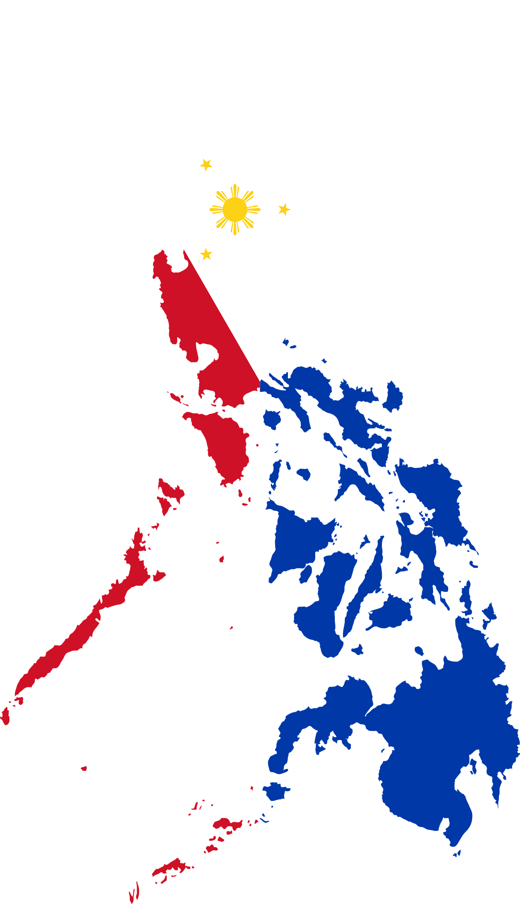
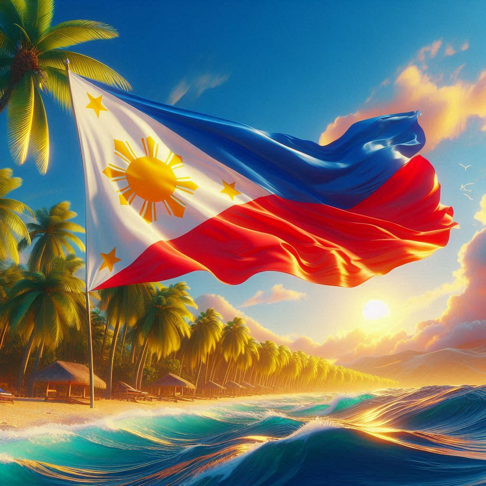
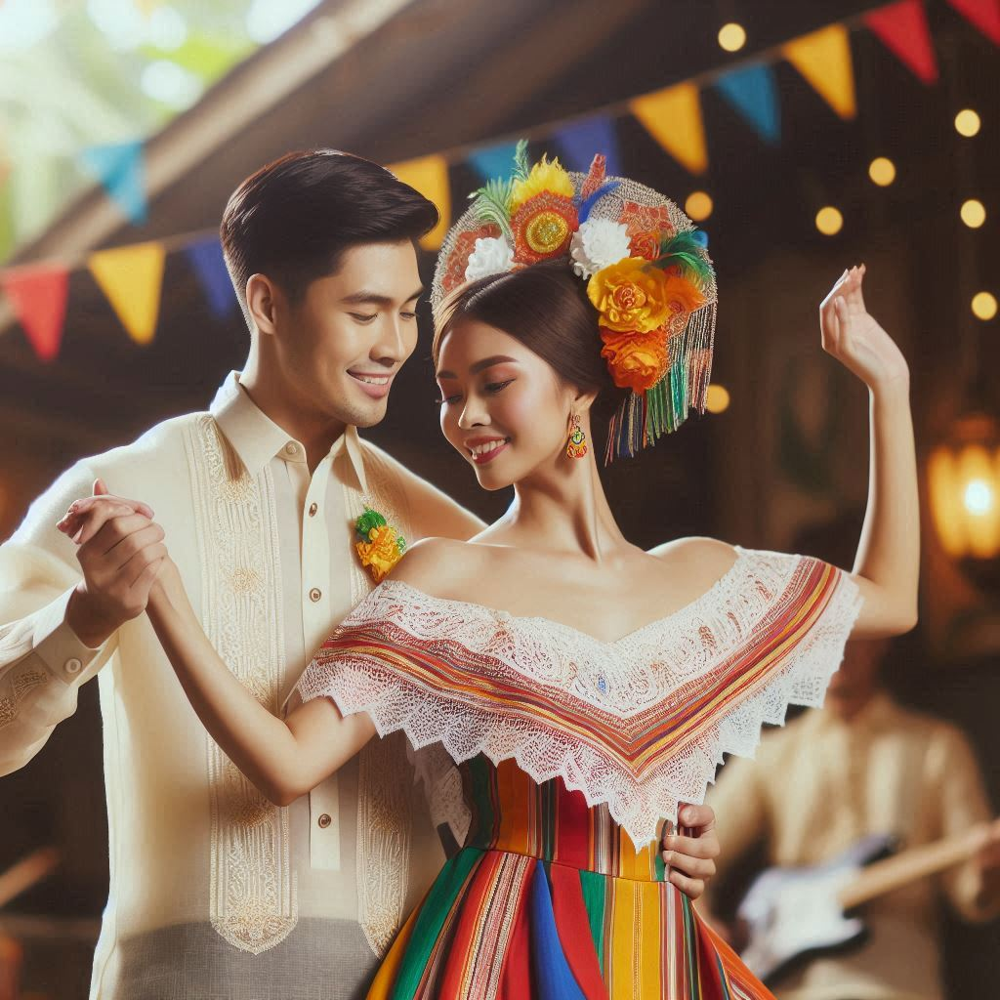

The Philippines is an archipelago in Southeast Asia, comprising over 7,000 islands. It’s known for its stunning beaches, rich biodiversity, and warm hospitality. The country has a diverse culture influenced by indigenous traditions, Spanish colonization, and American presence. From the bustling streets of Manila to the serene islands of Jolo, the Philippines offers a vibrant tapestry of experiences.

The Philippine national flag has a rectangular design that consists of a white equilateral triangle, symbolizing liberty, equality and fraternity; a horizontal blue stripe for peace, truth, and justice; and a horizontal red stripe for patriotism and valor.

The baro’t saya or baro at saya is a traditional dress ensemble worn by women in the Philippines. It is a national dress of the Philippines and combines elements from both the precolonial native Filipino and colonial Spanish clothing styles.